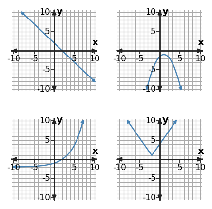

Selecting Appropriate Models
Function Analysis, Modeling, and Synthesis
Use structure, representations, and context as evidence—not decoration.
Learning Target
Students will determine whether a situation is best modeled by a linear, quadratic, or exponential function.
- I can construct evidence from tables, graphs, and contexts to choose a linear, quadratic, or exponential model.
- I can apply rate, second-difference, and ratio patterns to select an appropriate function family.
- I can determine whether a chosen model is reasonable for a situation and its data pattern.
Vocabulary / Key Notation Preview
model · linear · quadratic · exponential · difference/ratio pattern
Sort the vocabulary. Write each vocabulary word in the column that best matches what you know right now. You may move a word later.
| Know for sure | Recognize | Don't know yet |
|---|---|---|
What's to Come
DO NOT SOLVE IT YET.
Circle anything familiar, underline symbols, labels, conditions, data, or features that seem important, and write short notes about what you think may matter later.
Three relationships share the same inputs. Use the table and the graph-family panel to make a first prediction about each model. Describe what changes regularly, predict the next output for each table column, and name what evidence you would check later before trusting the model beyond the shown data.
| $x$ | A | B | C |
|---|---|---|---|
| 0 | 2 | 1 | 3 |
| 1 | 5 | 2 | 6 |
| 2 | 8 | 5 | 12 |
| 3 | 11 | 10 | 24 |

Let's Get Started
Skim the section. Record what catches your attention before you read closely.
| What I noticed | |
|---|---|
| What I predict | |
| What I wonder |
READ IN SHORT CHUNKS.
Annotate the words and visuals together. Underline evidence, circle or highlight bold vocabulary, label arrows, measurements, or important features, connect sentences to figures, and jot short questions or connections in the margins.
I can construct evidence from tables, graphs, and contexts to choose a linear, quadratic, or exponential model.
A mathematical model is a claim about how two quantities are related. Choosing a function family is not just naming a familiar graph; it is building an evidence case. A linear, quadratic, or exponential relationship should show a consistent structure across the representations that are available. A table can reveal how outputs change, an equation can reveal the algebraic form, a graph can reveal shape and key features, and a context can tell you what kinds of change make sense.
Each family has clues, but no single clue should be used carelessly. A linear model has a constant additive rate over equal input intervals and its graph has a constant slope. A quadratic model has changing first differences but constant second differences for equally spaced inputs, and its graph has one turning point. An exponential model has a constant multiplicative factor over equal input intervals, so equal steps in the input multiply the output by the same ratio.
The strongest choice comes from agreement. If the table looks linear but the proposed equation is exponential, those representations are not describing the same relationship. If a graph looks almost straight over a tiny interval, more data may reveal curvature. Treat each representation as evidence, then ask whether the evidence tells one coherent story before you commit to a model family.
- What numerical pattern in a table is strong evidence for a linear model when the input steps are equal?
- Why can graph shape alone be weak evidence when only a small part of the graph is shown?
- If a table and an equation suggest different function families, what should you conclude before continuing?
Equation clue: $y=mx+b$
Table clue: constant first differences
Graph clue: constant slope
Equation clue: an $x^2$ term
Table clue: constant second differences
Graph clue: one turning point
Equation clue: variable in an exponent, such as $ab^x$
Table clue: constant output ratio
Graph clue: multiplicative growth or decay
Linear: constant amount added
Quadratic: squared/geometric or turning behavior
Exponential: constant percent or factor change
Example 1: Identify a Linear Pattern
Use the table to choose a linear, quadratic, or exponential model. State the numerical evidence that supports your choice.
| $x$ | 0 | 1 | 2 | 3 | 4 |
|---|---|---|---|---|---|
| $y$ | 1 | 3 | 5 | 7 | 9 |
You Try It 1: Identify a Linear Pattern
Use the table to choose a linear, quadratic, or exponential model. State the numerical evidence that supports your choice.
| $x$ | 0 | 1 | 2 | 3 | 4 |
|---|---|---|---|---|---|
| $y$ | 4 | 7 | 10 | 13 | 16 |
Example 2: Read the Structure of an Equation
Classify $y=-3(x+1)^2+4$ as linear, quadratic, or exponential. Name one structural clue in the equation.
You Try It 2: Read the Structure of an Equation
Classify $y=(x-2)^2+1$ as linear, quadratic, or exponential. Name one structural clue in the equation.
I can apply rate, second-difference, and ratio patterns to select an appropriate function family.
Difference and ratio tests are useful because they describe the kind of change happening from one input to the next. The tests are meaningful only when the input values are equally spaced. If $x$ increases by 1 each time, a constant first difference means the same amount is added to $y$ each step. That is the additive structure of a linear relationship.
For a quadratic relationship, the first differences change, but those first differences change at a constant rate. Computing a second row of differences reveals that regularity. For an exponential relationship, the important comparison is multiplicative rather than additive: divide one nonzero output by the previous output and look for a constant ratio. This is the numerical version of a constant percent or factor of change.
These tests are evidence, not magic labels. Ratios can be misleading when outputs are zero, and second differences must be interpreted with the input spacing in mind. In context, the pattern should also make sense: adding the same number each hour suggests a linear process, while multiplying by the same growth factor each hour suggests an exponential process.
- Why must the input intervals be equal before comparing first or second differences directly?
- What is the key numerical difference between additive change and multiplicative change?
- A table has nonconstant first differences but constant second differences. Which family does that support, and why?
| Family | What to compute | What stays constant? |
|---|---|---|
| Linear | first differences | $\Delta y$ |
| Quadratic | second differences | $\Delta^2 y$ |
| Exponential | successive ratios | $\frac{y_{n+1}}{y_n}$ |
Use the test only after confirming that the input steps are equal.
Example 3: Use Second Differences
Choose the most appropriate function family for the table and support the choice with a difference pattern.
| $x$ | -4 | -3 | -2 | -1 | 0 |
|---|---|---|---|---|---|
| $y$ | 10 | 4 | 2 | 4 | 10 |
You Try It 3: Use Second Differences
Choose the most appropriate function family for the table and support the choice with a difference pattern.
| $x$ | -2 | -1 | 0 | 1 | 2 |
|---|---|---|---|---|---|
| $y$ | 2 | -1 | -2 | -1 | 2 |
Example 4: Match Context to Function Family
The area of a circular garden is recorded as its radius changes. Choose a linear, quadratic, or exponential model for area versus radius and name the behavior that supports your choice.
You Try It 4: Match Context to Function Family
A culture grows by 12% each hour. Choose a linear, quadratic, or exponential model and name the behavior that supports your choice.
I can determine whether a chosen model is reasonable for a situation and its data pattern.
A model can match the visible data and still be a poor model for the situation. Reasonableness asks a broader question: does the chosen family fit the pattern, the quantities, and the domain where the relationship is supposed to operate? A rule is not automatically trustworthy just because a calculator can evaluate it for any input.
Graphs and tables help check fit, but context adds constraints that mathematics alone may not show. A population cannot keep growing exponentially forever in a fixed environment. A projectile-height model may be useful only from launch until the object hits the ground. A line that fits the first few data points may become unrealistic if it predicts negative prices, impossible dimensions, or behavior outside the measured range.
Good modeling language is therefore conditional. Say what evidence supports the family, identify the interval or situation where the model is justified, and state what new evidence could make you revise the choice. A model is a useful description of a relationship under assumptions; it is not the relationship itself.
- What are two different kinds of evidence you should consider when deciding whether a model is reasonable?
- Why is being able to substitute an input into a formula not enough to justify a prediction?
- What would make you revise a model that currently fits the shown data?
- Pattern: Do table, graph, and equation features support the same family?
- Domain: Are the inputs inside the observed or meaningful range?
- Constraints: Are predicted values physically or contextually possible?
- Assumptions: What must stay approximately true for the model to remain useful?
- Revision: What new evidence would cause you to change the model?
Example 5: Use Ratio Evidence
Choose the most appropriate function family for the table and support the choice with a ratio pattern.
| $x$ | 0 | 1 | 2 | 3 |
|---|---|---|---|---|
| $y$ | 7 | 14 | 28 | 56 |
You Try It 5: Use Ratio Evidence
Choose the most appropriate function family for the table and support the choice with a ratio pattern.
| $x$ | 0 | 1 | 2 | 3 |
|---|---|---|---|---|
| $y$ | 2 | 4 | 8 | 16 |
Example 6: Identify a Family from a Graph
The panel shows four familiar function families. Identify the family in the top-right panel and name a visible feature that supports your answer.

You Try It 6: Identify a Family from a Graph
The panel shows four familiar function families. Identify the family in the bottom-right panel and name a visible feature that supports your answer.

Summary
- Choose a function family from evidence across tables, graphs, equations, and contexts.
- For equal input steps: constant first differences support linear models, constant second differences support quadratic models, and constant ratios support exponential models.
- A good model must be reasonable for the data pattern, domain, assumptions, and context—not merely computable.
Common Mistakes
| Mistake | Better move |
|---|---|
| Choosing from appearance alone | Use numerical or structural evidence in addition to graph shape. |
| Using the wrong pattern test | Use subtraction for additive patterns, second differences for quadratic change, and ratios for multiplicative patterns. |
| Ignoring the domain | State where the model is supported before extending predictions. |